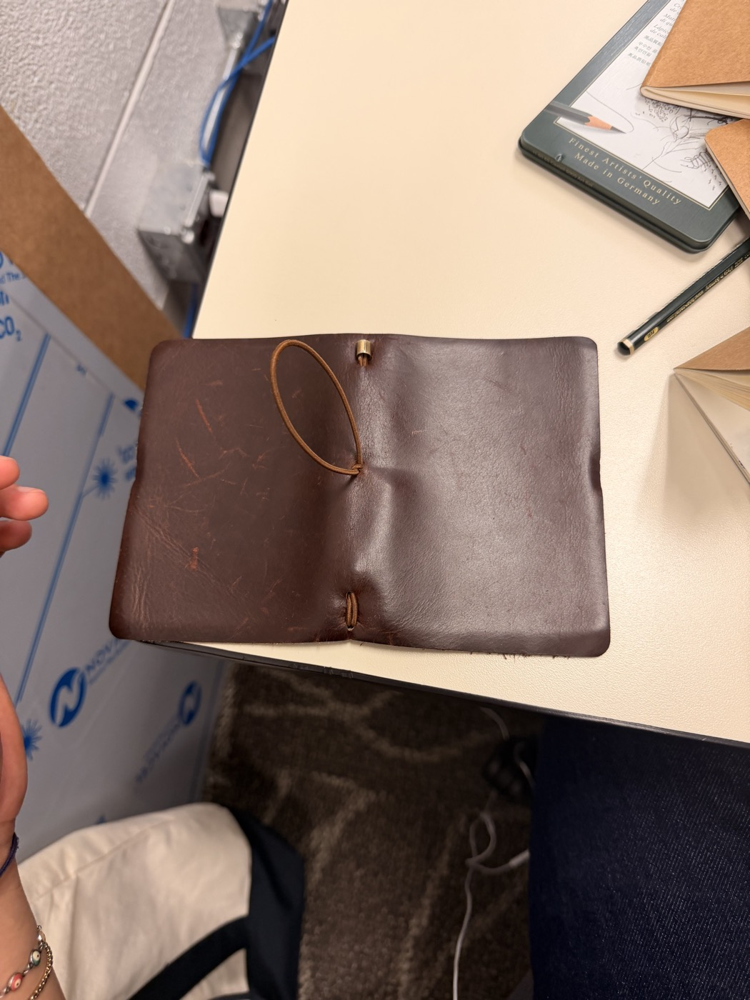
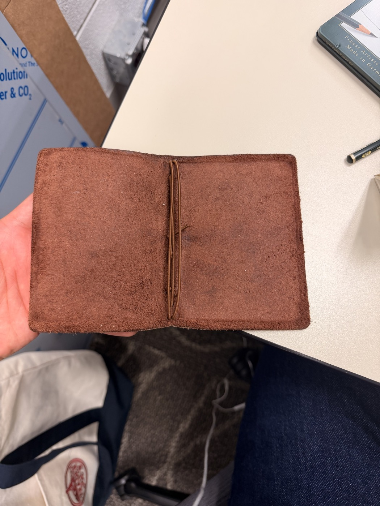
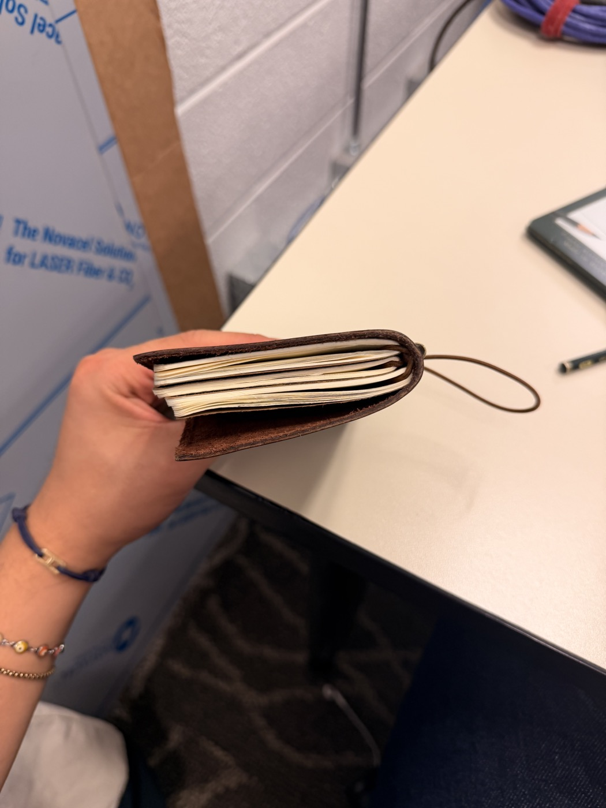
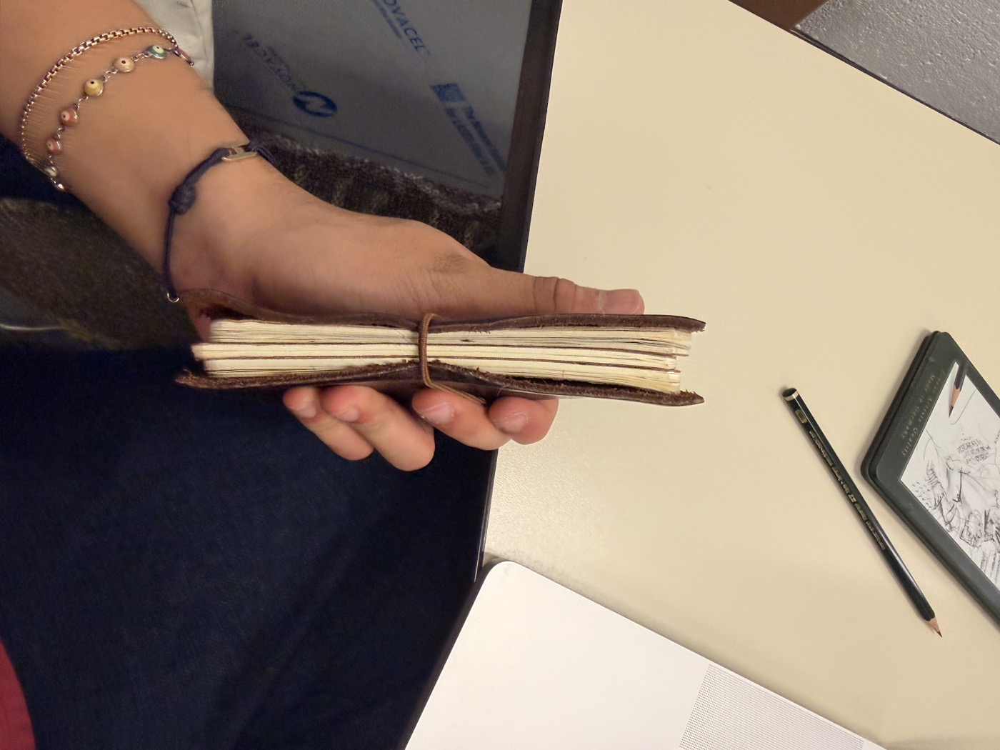

Three Stacked Goats
A passport-sized leather journal with three replaceable books. A starting point for material selection, construction discussions, and a first sample.
One leather cover, three small books, and a combination chosen by its owner. The journal should be small enough for everyday carrying and refillable as individual books are filled.
The requested collection includes brown, black, and olive green leather, with sketch, journal, and dotted paper. The launch paper colors are ivory, cobalt blue, and black.
Concept only. The website and 3D model communicate appearance and configuration. Dimensions, construction, materials, and performance have not been approved for production.




Photographed construction is a reference, not the final design. The additional reference photographs show a flexible single-piece cover, rounded corners, raw unstitched edges, a polished exterior, a rough suede interior, and layered notebook edges. The 3D model follows these visual cues. Confirm the attachment method and all dimensions against the physical object before sampling.
| Element | Requested direction | To confirm for sampling |
|---|---|---|
| Size | Closed journal: 5 in tall × 4 in wide (127 × 101.6 mm). | Confirm the target closed size in a physical sample, insert trim size, filled thickness, and pocket fit. |
| Cover | Leather in brown, black, and olive green. | A soft continuous wrap with gentle edge curl, a polished dark exterior, a fibrous suede interior, and raw unstitched edges. Confirm leather type, thickness, flexibility, finish, and edge treatment with samples. |
| Book system | Three small, replaceable books. Each book slips under an elastic attached to the leather cover, through its center fold; the retaining elastic stays with the cover when the book is removed. | Elastic routing, tension and anchor details, booklet construction, and access to each book. |
| Paper formats | Sketching, journal, and dotted paper. | Actual stocks, sheet count, line and dot spacing, margins, and printing colors. Lined is the prototype’s interpretation of journal paper. |
| Paper colors | Ivory, saturated cobalt blue, and black sheets, with light dots or ruling on colored stock. | Physical color samples, neutral stock, and which formats are offered in each color. |
| Customization | A choice of leather and paper. | Independent selection for all three books is proposed. Branding and additional personalization remain open. |
Use this brief to begin sampling. Record the approved materials, measurements, construction details, tolerances, and finish in a separate production specification after reviewing a complete physical sample.